Achat unique · Sans abonnement · Sans publicitéOne-time purchase · No subscription · No adsPago único · Sin suscripción · Sin anuncios
MusiDev
Développe ton oreille, apprends à lire la musique et pratique ton instrument, avec des exercices générés au hasard : tu n'apprends jamais les réponses par cœur.
Train your ear, learn to read music and practise your instrument with randomly generated exercises: you never just memorise the answers.
Desarrolla tu oído, aprende a leer música y practica tu instrumento con ejercicios generados al azar: nunca memorizas las respuestas.
iPhone, iPad, Mac et Android.iPhone, iPad, Mac and Android.iPhone, iPad, Mac y Android.
EntendreHearEscuchar
Dictées mélodiques et rythmiques, intervalles, progressions d'accords.
Melodic and rhythmic dictation, intervals, chord progressions.
Dictados melódicos y rítmicos, intervalos, progresiones de acordes.
Lire et jouerRead and playLeer y tocar
Lecture de notes, lecture à vue vérifiée au micro, rythme, solfège, batterie.
Note reading, sight reading checked by the microphone, rhythm, solfège, drums.
Lectura de notas, lectura a primera vista verificada por el micrófono, ritmo, solfeo, batería.
OutilsToolsHerramientas
Accordeur, métronome, accompagnateur avec gammes et modes, dictionnaire d'accords.
Tuner, metronome, backing band with scales and modes, chord dictionary.
Afinador, metrónomo, acompañamiento con escalas y modos, diccionario de acordes.
ComprendreUnderstandComprender
Une bibliothèque théorique complète et des questionnaires selon ton niveau.
A complete theory library and quizzes at your level.
Una biblioteca teórica completa y cuestionarios según tu nivel.
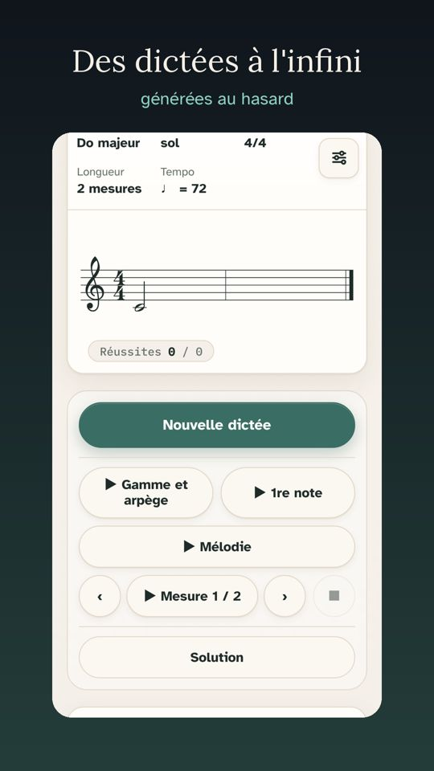
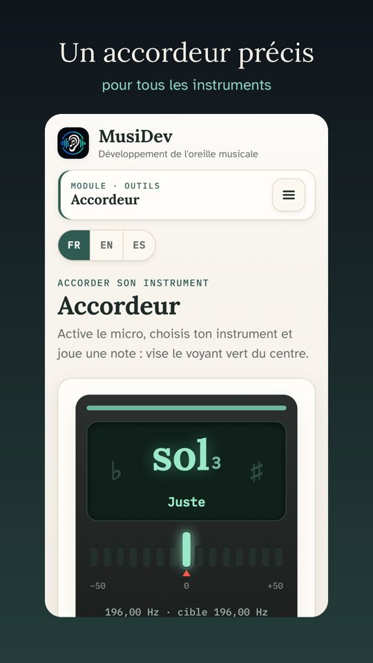
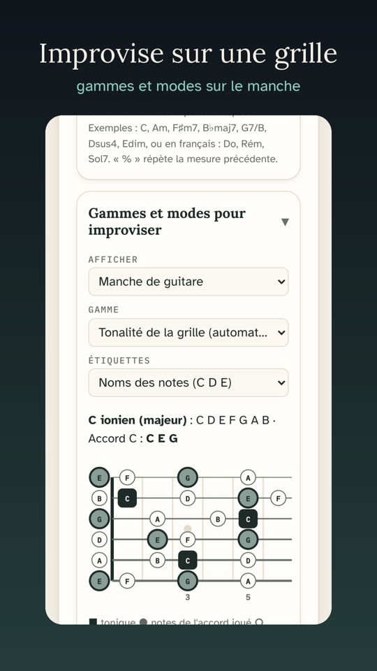
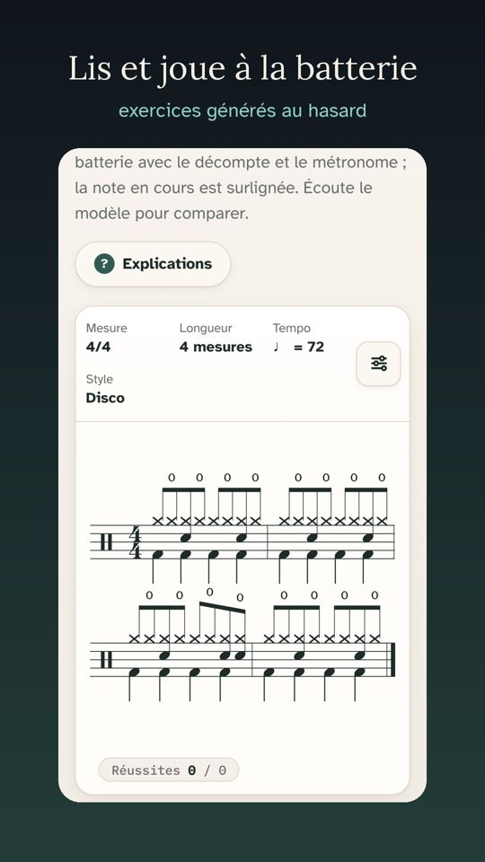
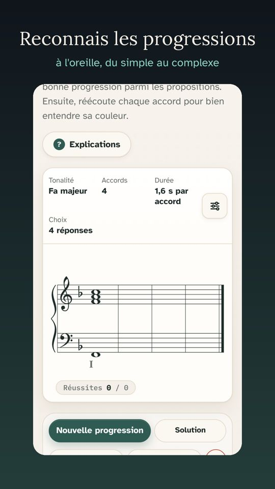
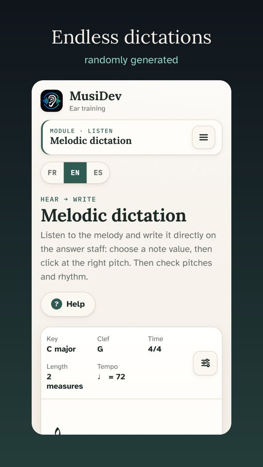
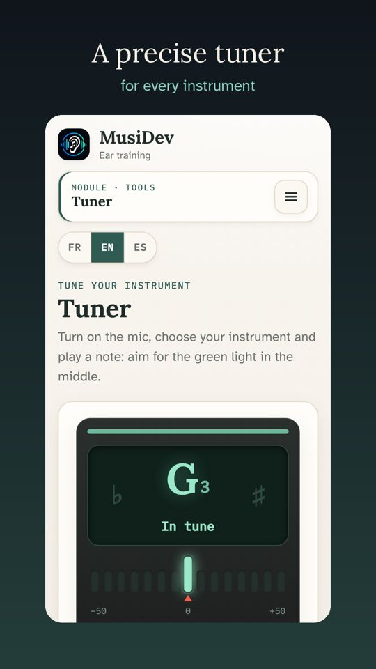
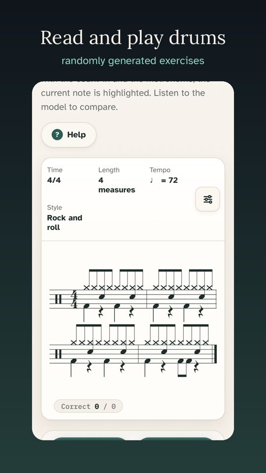
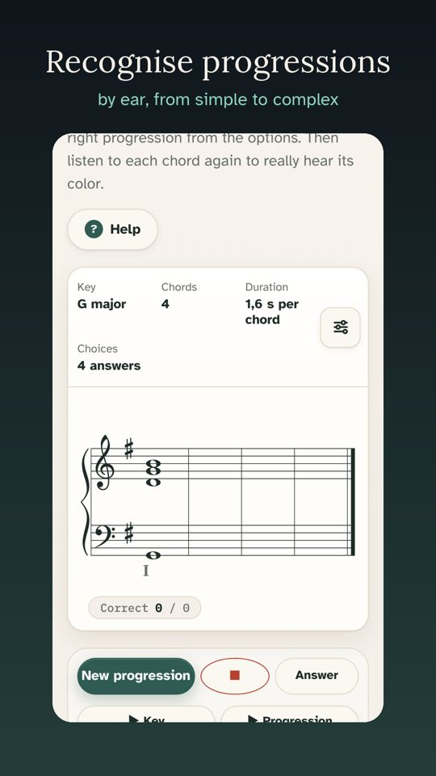
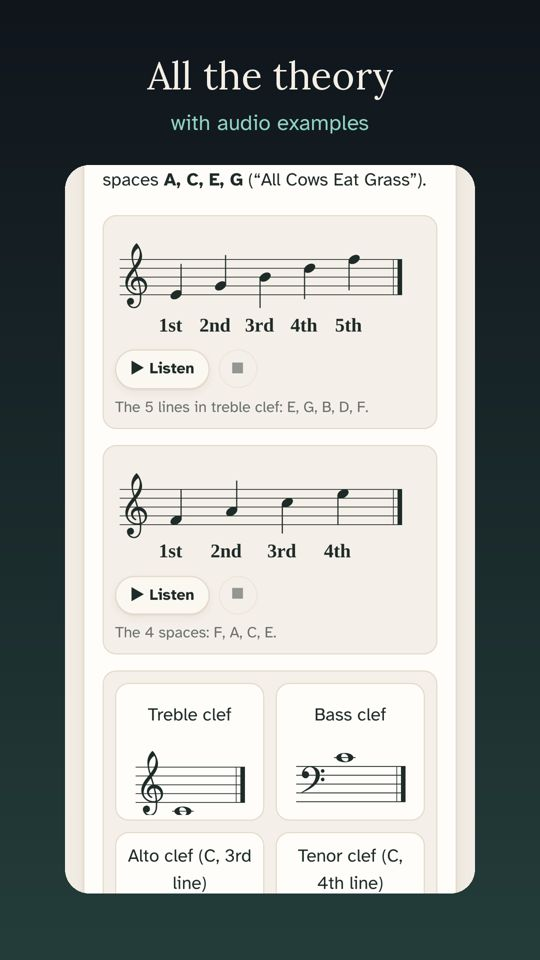
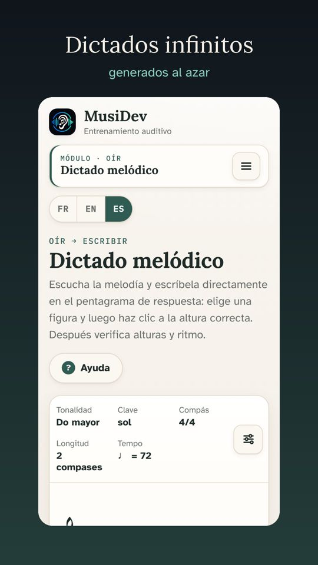
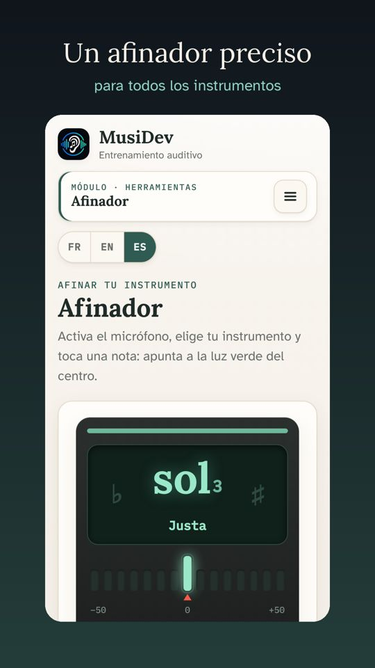
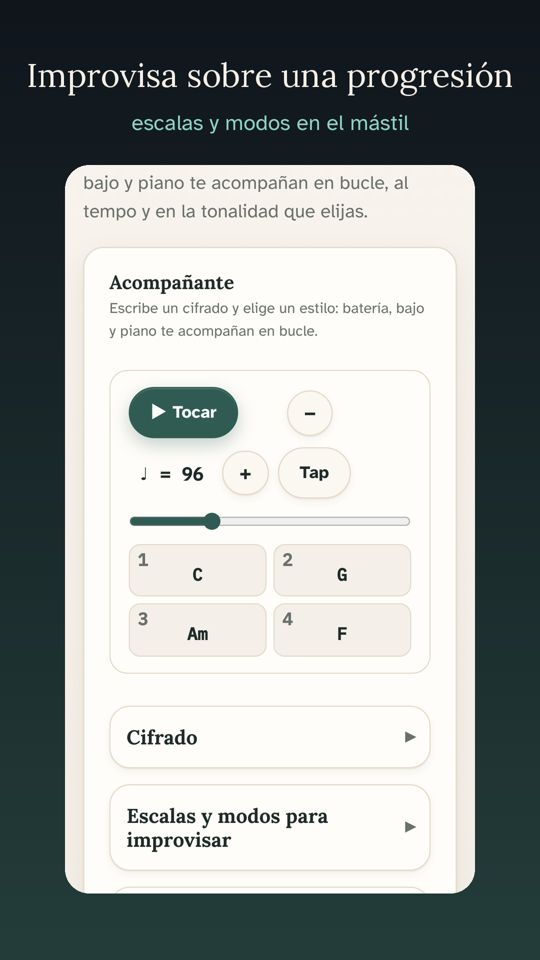
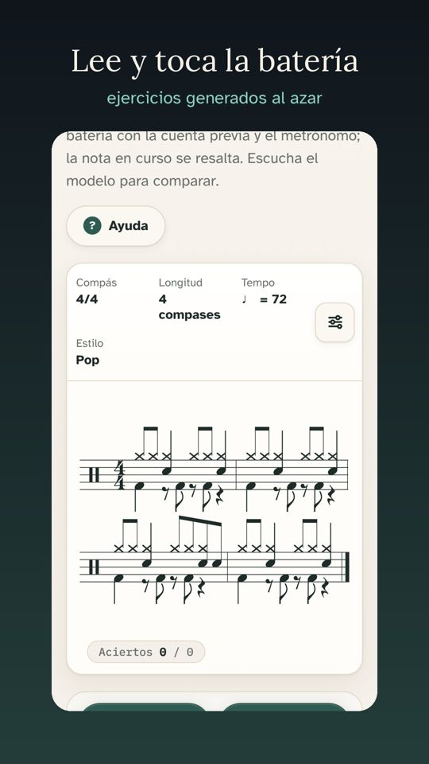
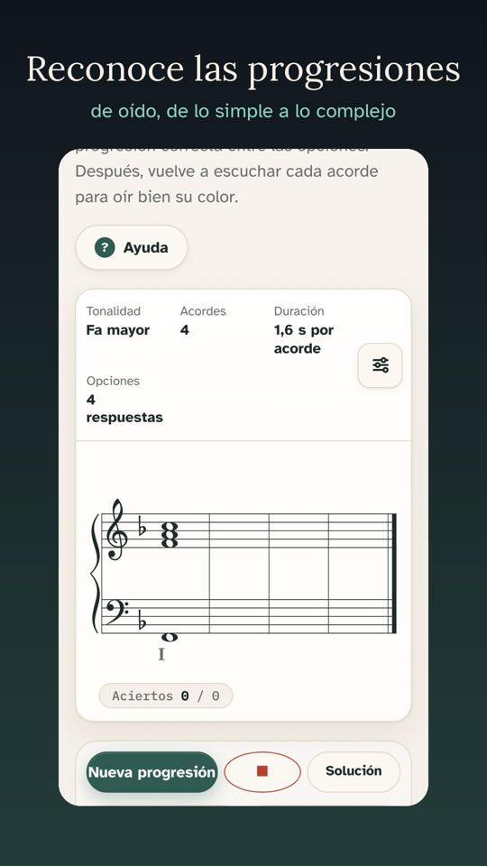
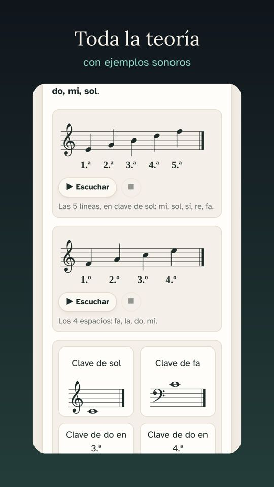

Le dernier single du créateur de MusiDevThe latest single from MusiDev's creatorEl último sencillo del creador de MusiDev